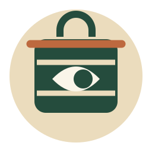
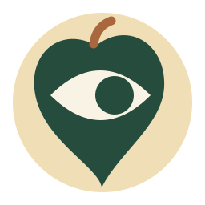
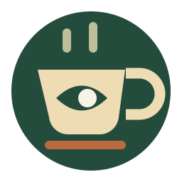
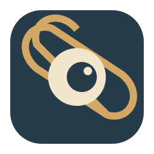
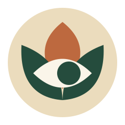

1 · Dabba lookout
A tiffin carrier with one observant aperture.
16 / 24 / 32 pixels, plus dark taskbar previews
2 · Jharokha
An eye in a quiet palace window.
16 / 24 / 32 pixels, plus dark taskbar previews

3 · Pipal peep
A single leaf, quietly watching.
16 / 24 / 32 pixels, plus dark taskbar previews

4 · Chai watch
The night watch, properly caffeinated.
16 / 24 / 32 pixels, plus dark taskbar previews

5 · Kolam signal
A looped floor pattern becomes a lens.
16 / 24 / 32 pixels, plus dark taskbar previews

6 · Lotus lens
A lotus with a very specific day job.
16 / 24 / 32 pixels, plus dark taskbar previews
Concepts for comparison. The app icon has not been replaced. Click a mark for its editable SVG.